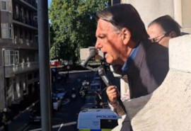
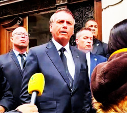

Bolsonaro fez discurso em tom de campanha e mencionou vitória em primeiro turno, embora apareça atrás do ex-presidente Luiz Inácio Lula da Silva (PT) nas pesquisas de intenção de voto.
Bolsonaro está no Reino Unido para participar do funeral e ficou hospedado na residência oficial do embaixador, onde apoiadores se aglomeraram para tentar falar com ele no domingo e nesta segunda-feira. . Veículos de comunicação britânicos repercutiram as declarações feitas pelo presidente Jair Bolsonaro (PL) durante sua viagem a Londres para o funeral da rainha Elizabeth 2ª.Tanto jornais de tendência à esquerda, como The Guardian, quanto à direita, como o Daily Mail, abordaram as manifestações do presidente brasileiro sobre política.
Bolsonaro chegou a Londres no sábado (18) para participar do funeral da rainha, que morreu aos 96 anos. Ele e outros chefes de Estado foram convidados pelo governo britânico para prestar as últimas homenagens à monarca. Bolsonaro está acompanhado da primeira-dama, Michelle Bolsonaro, do pastor Silas Malafaia, da Assembleia de Deus Vitória em Cristo, entre outros assessores e apoiadores.Ao chegar à residência oficial do embaixador brasileiro em Mayfair, ele fez um discurso da varanda para um grupo de apoiadores que se aglomeraram em frente ao prédio. O presidente iniciou a fala dizendo que se trata de um momento de pesar e falando em "profundo respeito pela família da rainha e pelo povo do Reino Unido". Disse que esse era o "objetivo principal", mas falou nos cerca de quatro minutos restantes sobre contexto político no Brasil e sobre sua plataforma de campanha à reeleição.